宝徳山稲荷大社（前編）/新潟県
新潟県のとある地方をドライブしていたらとてつもなく巨大な建物群が目に飛び込んできた。
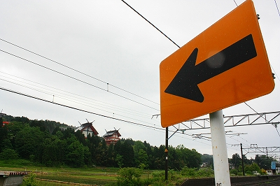
ごく普通の日常生活に宇宙船が舞い降りたかのような不思議な光景だ。
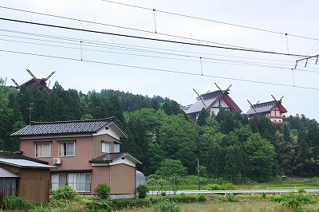 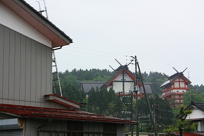
そのデザインといいスケールといい森の奥だけが異次元なのでは、と思えるほど。
その様は街中にいきなりぬっと出現する大仏に良く似ている。
見える建物は4棟ほど。いずれも千木と鰹木が備わっているので神道系の宗教施設と考えてよかろう。
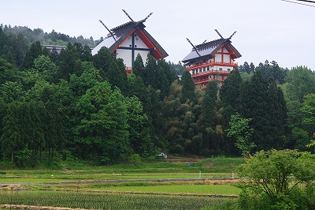
それにしてもこのフォルムの異様さはいかがであろう。
神道系、つまり神社の建物なのに5〜6階建てはありそうじゃないか。
これはいわゆる新興宗教なのだろう、と合点し、道端の看板に目をやる。
宝徳山稲荷大社…ん？お稲荷さん…なのか？
後日、調べてみるとこの宝徳山稲荷大社、大層古い歴史があり、新興宗教どころか一説には縄文時代に創建されたとか…。
ま、真偽の程はともかく、歴史のある神社であることは間違いないようだ。
で、もう一度先ほどの疑問が再浮上。
何でこんな建物なの？どう見たって新興宗教ノリじゃないすか。
兎も角、コレは実見して確認せねばなるまい。看板に導かれるまま山に入っていく。
程なくして巨大な社殿が姿を現す。
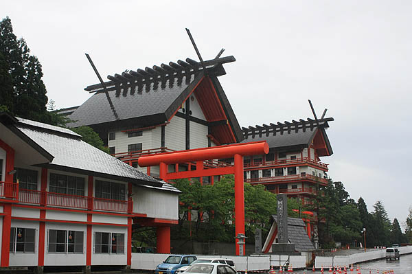
どうですか、お客さん。この雄姿。
鉄筋コンクリート造の中高層建築に伝統的な屋根組みを被せた建物の姿は天理教や戦前戦中の帝冠様式の建築を想起させる。
いずれも建築デザインとしては「何かを象徴してそうなのに実際のところ何を象徴しているのかよくわからない」形態だと思う。
伝統建築と近代建築を強引に合体させる荒業は、実際のところ様々な建築シーンで繰り返し行われてきた。
天理教の都市計画も帝冠様式の建築も建築史においては傍流として扱われているが、戦後のメインストリームであるモダニズム建築の中にも丹下健三の旧香川県庁舎に代表されるように必然性のない木造建築の木組みを真似した似非和風鉄筋コンクリート造建築などがもてはやされていたりもするし。
これは明治の擬洋風建築をさらに巧みにソフィスティケートさせた和魂洋才建築といえよう。
…でもさ。
実際には近代建築の文脈の中でお義理のように使われる和風のデザインってぶっちゃけ胡散臭くない？そんな部分をこの宝徳稲荷大社の社殿にも感じるわけですよ。
だから、見た瞬間新興宗教？って思っちゃうし、それが古い歴史を持つ伝統的な神社だ、と判っても何か釈然としないものがあるのだ。
あ、宝徳稲荷関係者各位におきましてはどうぞその抜きかけた刀を鞘に収めて頂きたき候。
「胡散臭い」とはこの場合、最大級の賛辞の言葉なわけでして、実際この時点で私の心の中ではマックスでウキウキワクワクなのですよ。
だって入り口からして↓こんなですもん。これは絶対、胡散臭い+格好良い＝ウサカッコイイ、でしょ。
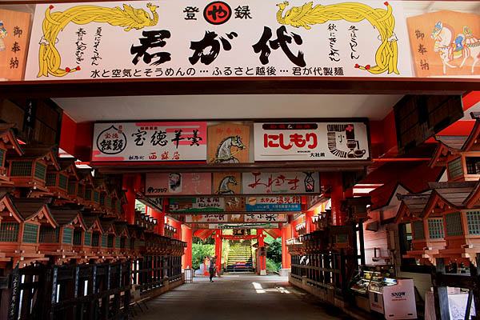
で、素敵なビルボード参道を抜けると巨大建築群に囲まれた中心部に出る。
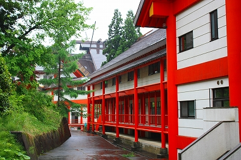 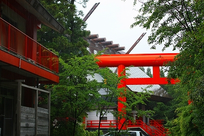
遠目に見ると和風建築と近代建築が微妙なバランスで存在しているように思えるが、実際近くで見ると朱色のフレームが妙に目立つだけの普通の近代建築だったりする。
こんな↓空中回廊のようなモノまでもご丁寧に朱色でフレーミングしてある。
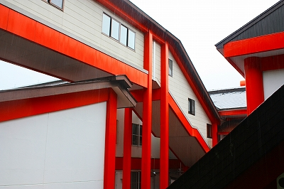
建築群は回廊や廊下などで接続されていて、複雑な回路のような構成になっている。
しかも全体像が俯瞰しにくく、どうしても近視眼的な視点からしか構成を捉えることが出来ないので複雑な迷宮のように思えてくるのだ。
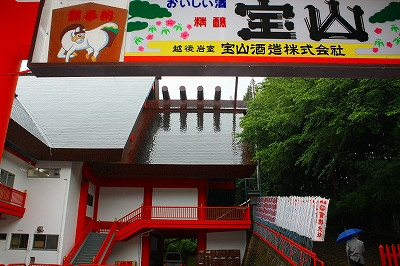
それを象徴するのがこの本殿。
先ほどの参道に対して背を向けて建っているのだ。
そもそも神社というものは大抵中心線を強く意識した建物の配置となっている。
参道を進み、鳥居を潜り、左右に小イベントである社務所や手水を抜けつつ正面にドーンと拝殿、その後ろに本殿、というのが一般的な神社の伽藍配置（神社でも伽藍配置っていうんだっけ？）であろう。
しかしここの建物群の印象はそれぞれの建物が勝手な方向を向いていて、それを後付けで無理矢理回廊や廊下や通路で繋げた感じが強いのだ。「各建物の向きや配置に関しては深遠なる意味があるのだ！」と刀を抜きかけた関係諸氏、あくまでも一見である私の感想ですからご勘弁を。でも初めてココを訪れた人は十中八九「建物の向き無茶苦茶じゃん」と思うはず。
ちなみに本殿内部は撮影禁止なので画像はなし。巨大な提灯以外は結構普通でした。
境内にあった稲荷社。
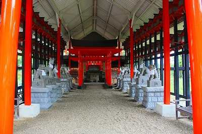 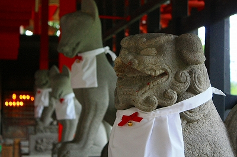
豪勢な祠、立派な燈籠に比べて波スレートの屋根。
屋根と本体のギャップこそがこの神社のキモなのかもしれない。
…まだまだ見所はあるのだが、そろそろお家に帰る時間なので続きはまたあとで。
その2に続きます
2009.05.
珍寺大道場 HOME